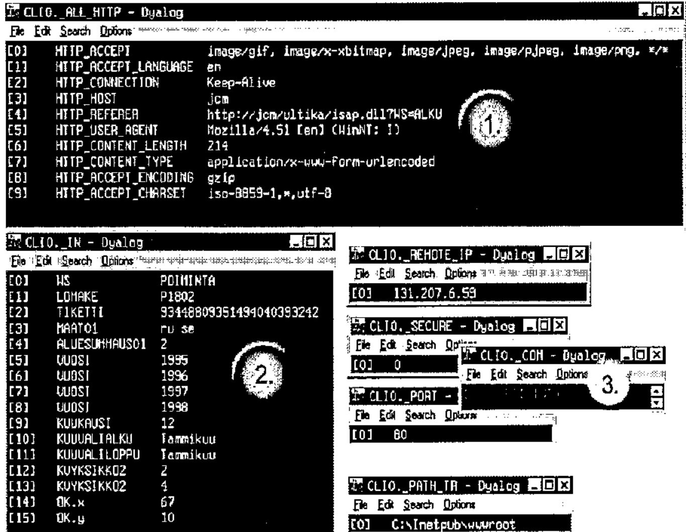

Setting up a www-server with Dyalog APL, IIS, ISAP and NT
Vector 16:3, page 131
Transcribed from the printed issue; not yet reviewed. Read it in the PDF of the issue, page 131
Introduction: The Basics of an APL Web Server¶
This article concentrates on building a dynamic www server on Microsoft’s Internet Information Server and Dyalog APL. The latter takes care of all dynamic elements, and a third party program ISAP by Lingo Allegro handles the communication between the two.
A dynamic APL web server can be created with only APL, or in combination with third party programs. A solution using IIS is, in my opinion, more flexible and ready-for-use than the web server included with the Dyadic interpreter. User privileges, user logs, encryption and integration with the operating system are taken care of. IIS also allows several sites on one machine, even several IP numbers. One great thing about a less exotic server is that it can be maintained by everyday webmasters. No APL needed!
In an IIS+ISAP+APL solution Dyalog APL receives data about all user’s HTML operations linked to ISAP.DLL (post, get, button, URL) via a shared variable. APL pushes user-ready HTML pages back to ISAP→IIS→user via the same variable. HTML pages coming from APL can either be static or dynamic. Server can also contain static pages and elements that do not need APL interaction. Usually these are help pages, pictures etc.
The Case of Foreign Trade Statistics¶
The Finnish foreign trade statistical database Ultika has been around since the beginning of the decade. The programs are provided by TietoEnator, data is produced by Finnish Customs. The database contains more than 2.5 billion numbers, and thus is one of the biggest public statistical databases in Europe. Before the introduction of a web interface Ultika was accessed using 3270 terminals. The database is still on a VM/CMS mainframe under IBM APL2 and ADI. The web interface is on an NT machine, interacting with VM using TCP/IP inside TietoEnator networks. Www-Ultika was launched on December 1998; static (Finnish) pages can be experienced at http://Ultika.Tieto.net/.
The Basics of Dynamic HTML¶
HTML utilises a few basic tools from the graphical user interface: text fields, checkboxes, radio buttons, pull-down menus and buttons. In Ultika buttons have been replaced with picture maps that are used like buttons. The basic GUI tools turn into variables on an HTML page, and get values according to user interaction. An HTML page is defined to be a form with an appropriate tag that also includes data about what is to be done when exiting the form. Exit from the form can happen in three ways:
- by clicking a link (links do not need forms to work)
- by clicking a picture map (like Ultika buttons) or
- by pressing a button
Upon exiting, the browser sends the server, among other things, the form variables along with their values. The server replies with headers and the resulting HTML page.
Dynamic IIS-ISAP-APL Server¶
A www server receives headers and data about user actions from the browser. In this case IIS delivers the data to Dyalog APL via Lingo’s ISAP. The APL server action is based on namespaces. An HTML form tag or link contains the name of the server namespace as the value of a variable called WS, to be used when exiting the page. These server namespaces contain an APL vector _COM, including the namespace functions to be executed.
An example of a link from an HTML page (not form) to APL:
The text "1 to 10" is a link on the HTML page, and by clicking it the data on href are transferred to IIS server by the browser. IIS transfers the data to ISAP.DLL, and ISAP pushes it to the shared variable _IN in the EXECUTE namespace. _IN is a two-dimensional nested matrix. The first column contains the names of the variables (WS and OPERATION in this case) and the second corresponding values (EXECUTE and 10), all as text. A form may contain several variables with the same name.
In the EXECUTE namespace the answer is formulated to an HTML text vector and sent to the browser. The developer does not need to worry about user control or take care of simultaneous users, ISAP does that. ISAP creates a copy of the namespace used, and after the transaction deletes the copy. In this #.CLI0 (#.CLI1 etc.) namespace the user is treated as the only person ever to have used the service, so it is very difficult for the developer to get confused with user channels.
An Example of Server Services¶
All data transferred from IIS to APL are in the picture. ISAP creates several global variables to the namespace used. These variables can be used when creating an HTML-answer to the user.

Number one contains http headers sent by www browser. APL variable contains information about file formats understood by the browser, language, connection type etc. Number two is the _IN containing all HTML variables with values, three is _COM variable on top, the name of the first function to be started. Under _COM are various variables: user IP, info about encryption, server gate number, server virtual directory and server actual directory.
Practical Work in Practice¶
Setting up an Ultika-type web server is cheap, easy and fun. IIS is free and the ISAP demo version equals the price. When installed, ISAP sets up its demo site (the workspace, run time engine, HTML pages, ISAP programs) under IIS as one of its web sites. The developer can rather easily build his site on this basis. It is very advisable to use the tools in the root of the ISERV demo workspace. The workspace is a replica of Lingo’s web site.
Our equipment is:
- NT 4 server (workstation for 10 or less simultaneous users) (www.microsoft.com)
- Dyalog APL (run time is enough for web site) + workspace (www.dyadic.com)
- Microsoft Internet Information Server 3 or newer (preferably IIS4) (www.microsoft.com → NT server option pack, can also be installed on an NT workstation)
- Lingo Allegro ISAP 3 or newer (preferably ISAP 4 or 5) (www.lingo.com)
A good help designing the pages is Microsoft FrontPage, a WYSIWYG HTML-editor integrated to IIS.
Learning the Hard Way, Hints and Tips for the Developer¶
Here are a few tips learned the hard way. Learning them has made my life easier, so I am sharing them with the APL community… Solutions described here are rather obvious, but realising them might take time and effort. At least for me they did.
- Dynamical bases. The dynamic elements of all HTML-pages should be marked in the base-HTML clearly. In Ultika all dynamic parts are marked with a modified HTML comment tag:
<!--**-->, one in the beginning of the dynamic part and one in the end. Between the two is the default value of the dynamic element. In the worst case scenario the tags go through APL unmodified, but that does not hurt the browser and the user gets some values. In the web server project the HTML pages can be separated to a sub-project and taken care of by a web designer. When basic HTML pages are read to the APL server workspace, the non-dynamic elements can be separated to specific variables, like in the elements of nested APL arrays. - Modularity. Ultika has dozens of similar pages with only a little variation. To avoid maintaining all these individual pages, a modular system was introduced. Modular elements or modules are put to a few HTML bases according to user needs. These modules are selections of years, months, countries, product codes etc. Actually each Ultika module corresponds to a mainframe 3270-selection of the old Ultika interface.
- User recognition. There are two ways of creating a www-session with state that is able to recognise the user every time she/he interacts with the server: using a cookie or a ticket hidden in the HTML page. Because some users can or will not accept cookies, Ultika uses a ticket. A Ticket is a simple, unique string of numbers created with the user id and the seconds passed since I was born. This ticket is put to every HTML page in a hidden variable ticket, for example:
<input type=hidden name="TICKET" value="67678867">
In the Ultika server workspace every user who is logged on has his own namespace containing user information. This info is about the statistic data the user is browsing etc. Every ticket is also in a nested matrix containing the ticket, the name of the corresponding namespace and the absolute seconds the ticket was last used. Whenever a ticket gets to be older than 30 minutes, the user ticket and namespace are deleted. If IIS passes an HTML-page to APL with a TICKET-variable not on the list, the user receives a notification about the session being not valid any more. Compared to a cookie, a ticket does nothing in user’s machine, so the paranoid people can relax about Internet safety.
Happy Developer¶
In my opinion the IIS-ISAP-APL solution is very effective. Getting started is easier using a pure-APL solution, with IIS and ISAP the developer has to study the logic of two extra programs. When the basics are clearly in mind, the actual web server programming is fast and effective. IIS-ISAP co-operation is considerably fast and stable, and when IIS crashes it normally does not crash the NT server. ISAP includes lots of programs that a pure-APLer would need to write anyway, not to mention the service level of IIS. Both ways have their pros and cons, and like in all life, there is more than just one way of doing things right.